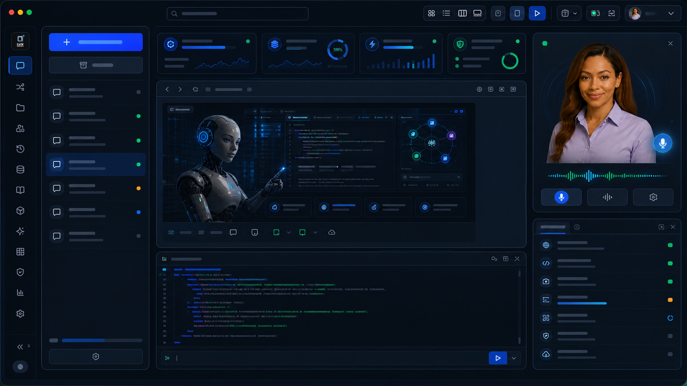

Base
Set the project foundation, model roster, memory, and access rules.
Lux Coder Suite turns chat, code, files, apps, LuxWiki, 3D mindmaps, model switching, and verified loops into one private AI software workspace.
Set the project foundation, model roster, memory, and access rules.
Bring in files, repos, notes, screenshots, and product assets.
Let the agent create structure, context, tasks, and next steps.
Execute, test, inspect, and refine in verified feedback loops.
Ship with confidence, monitor outcomes, and improve the system.
These are the signature capabilities that make the suite feel different from a normal chat box or editor plugin.
LANA sits beside the workspace while Jarvis-style voice control gives builders a hands-free command path for questions, approvals, and status.
Switch between providers, compare readiness, watch health signals, and keep fallback choices visible before a run.
Map projects, sources, agents, APIs, docs, tests, and decisions so complex builds become inspectable.
Preview built apps, capture screenshots, inspect browser state, and keep customer-ready evidence close to the chat.
Use focused skills for UI, documents, data, security, GitHub, testing, deployments, and repeatable workflows.
Every build can move through run, inspect, decide, act, verify, and report cycles with approval-first guardrails.
One coherent command center for planning, coding, inspecting, testing, and shipping real software.
Two-way assistant guidance, voice handoff, approvals, and project-aware build support.
Route work through OpenRouter, Claude, Gemini, GPT, or local options with health and fallback visible.
See code, docs, sources, issues, agents, and decisions as one connected build graph.
Review app previews, browser QA, screenshots, and customer-ready build evidence before handoff.
Specialist skill packs cover UI, docs, security, data, deployments, reports, and agent workflows.
Run, inspect, verify, and report every important step before shipping it.
Save decisions, sources, specs, and project notes into a private knowledge layer.
Upload source packs, docs, screenshots, PDFs, and handoff notes before a run begins.
Lux Coder is designed around the whole builder workflow, not one narrow assistant lane.
| Capability | Lux Coder Suite | Codex | Claude Code | Cursor | Antigravity |
|---|---|---|---|---|---|
| Private AI workspace | Yes | Cloud / CLI | Terminal-first | Editor-first | Agent platform |
| Integrated agent system | Yes | Yes | Yes | Partial | Yes |
| Chat, code, files, apps | Yes | Code + tasks | Code + terminal | Editor + agent | Editor + browser |
| LANA + Jarvis voice layer | Yes | No | No | No | No |
| Approval browser / terminal bridge | Yes | Task approval | Terminal tools | Editor tools | Browser agent |
| LuxWiki / memory layer | Yes | Partial | Project context | Rules / context | Memory / artifacts |
| 3D mindmaps | Yes | No | No | No | No |
| Model switching | Yes | OpenAI-first | Claude-first | Multi-model | Gemini-first |
| Apps Built Preview | Yes | Task evidence | Terminal output | Preview possible | Artifacts |
| Skills | Yes | Skills | Commands / MCP | Plugins / skills | Plugins |
| Verified loops | Yes | Reviewable tasks | Manual checks | Agent flow | Plan / execute / verify |
| Branded reports / exports | Yes | Limited | Limited | Limited | Artifacts |
| USB / offline direction | Yes | No | No | No | No |
Connect Lux Agent USB so Lana and the agent team can use the browser, terminal, project scanner, files, and verified harness tools through one approval-controlled bridge.
Click each tool lane to see how Lana and the agent team move through browser, terminal, scanner, files, and harness verification without losing operator control.

Clean browser ready for inspect, click, resize, screenshot, and console checks.
Terminal runs stay approval-first, traced, and ready for verification.
Project scanner reads repos, branches, files, and source relationships before action.
Files, photos, docs, source packs, and screenshots stay close to the agent run.
Lux Harness records orient, inspect, decide, act, verify, and report evidence.
Approval mode: Ask before tool use.
Photos and product visuals show the bridge, Lana, browser control, terminal runs, and verification cockpit as one connected operating surface.
Start free, upgrade when the workspace is part of your daily build system, or bring Lux into your team.
For learners and hobby projects.
For individual developers.
For growing teams.
For organizations with scale.